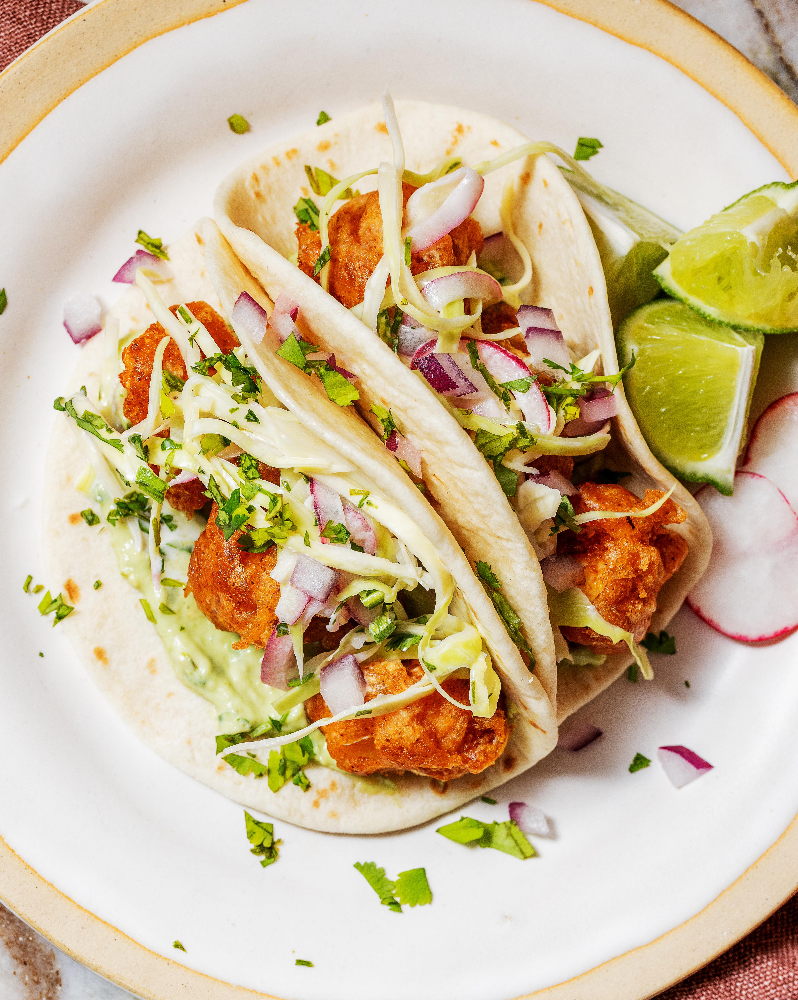

Fish Tacos

Prep Time: 45 minutes
Cook Time: 1 hour
Total Time: 1 hour 45 minutes
Servings: 12 tacos
Calories: 304kcal
Equipment
- Whisk
- Food processor
- Skillet or baking sheet
- Large pot
- Meat or deep-fry thermometer
Ingredients
Slaw:
- ½ small head green or red cabbage, trimmed and sliced paper-thin
- ½ small red onion, peeled and sliced paper-thin
- 1 serrano or jalapeño pepper, trimmed and minced
- ⅓ cup loosely packed cilantro, minced
- ¼ cup distilled white vinegar
- 2 tablespoons granulated sugar
- 2 tablespoons mayonnaise
- 1 lime, juiced
- Salt
Jalapeño-avocado cream cheese:
- ¼ of a small red onion, peeled
- 1–2 jalapeños or serrano peppers, depending on heat tolerance, trimmed
- 1 tablespoon neutral oil
- 1 large avocado, halved, peeled, and pit discarded
- ⅓ cup loosely packed cilantro
- 1 lime, juiced
- 4 ounces cream cheese, at room temperature
- Salt
Beer-battered cod:
- 1½ pounds cod, patted dry and cut into 1-inch cubes
- 1½ cups flour
- 1 tablespoon chili powder
- 2 teaspoons salt, plus more as needed
- 1 teaspoon baking powder
- 1 teaspoon paprika
- 1 teaspoon cayenne powder
- ½ teaspoon garlic powder
- 16- ounce can of Corona or your favorite lager or pilsner
- Veggie or peanut oil, for frying (you’ll need a couple cups!)
For serving:
- 3–4 radishes, trimmed and thinly sliced
- 1 small cucumber, sliced into rounds
- ¼ red onion, minced
- ⅓ cup loosely packed cilantro, minced
- Small flour or corn tortillas; I recommend 2–3 per person
- Sliced serrano or jalapeño, thinly sliced
- 1 lime, cut into wedges
Prepare the slaw:
- Place the cabbage, red onion, serrano pepper, and cilantro in a large bowl. Sprinkle liberally with salt and pour the lime juice on top.
- In a microwave-safe bowl, add the vinegar and sugar. Microwave for 1 minute until the sugar is dissolved. Let stand for 5–10 minutes.
- Add the mayonnaise and whisk until completely smooth.
- Pour the dressing over the cabbage and toss to combine. Taste and season to your preferences. Transfer to the refrigerator until needed.
Prepare the jalapeño-avocado cream cheese:
- Turn on your oven’s broiler to high.
- Place the red onion and jalapeños in a small oven-proof skillet or baking sheet. Drizzle with 1 tablespoon of oil. Transfer to the oven under the broiler. Broil for 3–5 minutes (depending on the intensity of your broiler) until the peppers begin to blister and blacken. Remove and set aside.
- Combine the avocado, cilantro, lime juice, charred jalapeño, and red onion in a food processor. Place the cream cheese on top and pulse until completely smooth and creamy. Taste and season with salt. Pour into an airtight jar or a bowl and cover tightly with foil. Transfer to the refrigerator until needed.
Make the cod:
- Pour oil into a large pot, about 3 inches deep, and heat the oil to 350º–375ºF. Note: If you don’t have a deep fat thermometer, use an instant-read meat thermometer, provided the stem is long enough! You’ll want to regularly check the oil’s temperature and ensure you stay at a consistent 350ºF–375ºF.
- Pat the cod pieces dry and season lightly with salt. Set aside.
- Combine the flour, chili powder, salt, baking powder, paprika, cayenne powder, and garlic powder in a bowl.
- Pour in the beer and whisk until completely smooth and free of lumps. The batter will be thicker than cream but still a tad runny.
- Place all of the cod pieces in the batter and toss to combine.
- Using tongs, lift a piece of cod from the batter and lightly shake off any drippy excess batter. Slowly drop it into the hot oil. Fry 4–6 pieces at a time, depending on the width of your pot. Be sure not to overcrowd the pot! Cook for 3–4 minutes until golden brown all over. Use a slotted spoon to transfer a paper towel-lined plate. Continue frying in batches, checking and adjusting the temperature periodically.
To serve:
Arrange radishes, cucumber, red onion, cilantro, sliced jalapeño, and lime wedges on a serving platter.
To assemble the tacos, smear a spoonful of the jalapeño-avocado cream cheese onto a warm tortilla. Place a few cod nuggets on top and finish with a spoonful of slaw. Sprinkle minced red onion and cilantro on top. Add one or two slices of jalapeño on top for extra heat, if you like. Serve cucumber, lime wedges, and radishes on the side. Enjoy!
Notes:
For the recipe, you’ll use cilantro in the slaw, cream cheese, and for serving. Buy just 1 nice-sized bunch and divide it into 3 for each component.
You’ll also need to buy just 1 red onion (use half of it for the slaw, and the remaining half is used for the cream cheese and for serving).
Nutrition:
Calories: 304kcal | Carbohydrates: 34g | Protein: 16g | Fat: 12g | Sodium: 351mg | Fiber: 4g | Sugar: 5g | Vitamin C: 17mg